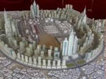

الجديد

هل يقرأ المسؤولين ما يكتبه الكتاب
22/11/2010
اكتب هذا المقال وانا في مدينة هونج كونج. لقد زارها الكثير من الناس ويعرفونها اكثر مما اعرف فيها، ولكن لي تاملاتي الخاصة كما ان كل شخص ينظر الى الامور من منظار يختلف عن الاخرين وهذه حكمة الله في خلقة وابداعه في اختلاف مشاربهم. تعرفت على شخص من اصل عربي يعيش في هذه المدينة منذ اكثر من ثمانية اعوام ويعمل بها في مجال التصدير وهو ناجح ومستقر. وكان لطيفا رغم انه نبهني بطريقة لبقه ان الناس هنا لا يضيعون وقتهم مع بعضهم البعض فان لم تكن هناك مصلحة فلا حاجة للقاء. استثناءً من ذلك المسلمين فنحن في حاجة الى التقارب والتراحم وان كانوا بصفة عامة لا يساعدون بعضهم البعض كاستراتيجية تخدم الامة ولكن هذا يحدث فقط بينهم كافراد. لاحظت كثرة الناس وكثرة الحركة ولم استطع التفرقة بين من يعمل ومن يتنزه او يتسوق لان من يتسوق كما يبدو لي قد يكون في الواقع يعمل. فسالته عن نسبة البطالة، ولم يفهمها رغم انه عربي الا انني قلتها بعدة كلمات وفي الاخر اسعفتنا اللغة الانجليزية فاجابني انها تتراوح بين 7الى 8% هذا العام واستطرد بقوله لا تنزعج كلنا نعلم ان هذه النسبة عالية جدا، لكن لظروف الاقتصاد العالمي حاليا ولعنترية بوش فنحن نتاثر مثلنا مثل الاخرين ( لقد اصبح بوش بما يجلبه على العالم من دمار، علم على راسه نار). ثم عقب بقوله، الا ان العمل جاد هنا لخفض هذه النسبة، خوفا على تاثر الناحية الامنية فنحن ولله الحمد في امان هنا. فتبسمت من قلقه ولم اذكر نسبة البطالة عندنا وان كانت اكثر من ذلك الرقم بكثير. وان تذكرتها فلا احتاج لذكرها في ذلك المقام. كما ان كلنا يعلم ان الاقتصاد العالمي في هذه المرحلة حتى ان المانيا تواجة بطالة وصات الى9.9% والتي يعلق عليها المراقبين بان الاداء الاقتصادي للمستشار الالماني غير جيد. الشئ الاخر الذي لاحظته ان معظم الناس ذوي احجام صغيرة او بالاصح نحيفي البنية بينما اكثرنا يتمتع بالسمنة. فاعطاني السر في ذلك، اولا معظم اكلهم ان لم يكن كله، اما خالي من الدهون او قليل الدسم. وثانيا لا ياكلون كثيرا، بل مقتصدين في اكلهم واستمر في قوله ربما يكون ذلك من باب التحكم في المصاريف، ولكن باختصار هم لا ياكلون كثيرا وبعيدين عن حالة التخمة (التي نعيشها ولله الحمد والمنة كل يوم). وثالثا انهم يعملون كثيرا، لا يملون، ولا يتباكون بالتعب وتغيير الجو او...او.... انهم يعملون طالما صحتهم حقيقة تسمح لهم بذلك. واخرا وليس اخيرا انهم يمشون كثيرا ويستخدمون ادوات المواصلات المختلفة مثل القطار تحت الارض وهو اداة فعالة سواء بالسرعة والسلامة والامان واقتصادية التكلفة. وقد ذكرني هذا بقول الرسول عليه الصلاة والسلام في الحديث النبوي (..نحن قوم لا ناكل حتى نجوع، واذا اكلنا لا نشبع..) وقوله عليه الصلاة والسلام (ان الله يحب اذا عمل احدكم عملا ان يتقنه). امر اخر، رايت هونج كونج مضاءة بالليل باللوحات الاعلانية، وبمقاسات ضخمة ومنتشرة في كل مكان ولمختلف الاعمال المنتشرة سواء كانت لمؤسسات كبيرة او مؤسسات صغيرة، واثار ذلك في نفسي الكثير من التساؤل. فسالت مازحا هل اللوحات الاعلانية مجانا، فاجابني لا بالطبع كل صاحب مؤسسة يركب اللوحة وبالحجم الذي يريده ولكن على حسابه فهو مسؤول عن الترويج لبضاعته. فتبسمت وقلت هل يدفع رسوم او ايجار للبلدية مثلا. فرد علي بقوله لا، فهم ايضا يستفيدون كلما باع التاجر اكثر، وهنك ضرائب على صافي الربح، وبالعكس هم يشجعوننا على وضع الاعلانات للتسويق ولكن يضعون حد اعلى لمقاسات اللوحة لا يجب ان يتجاوزها. ولم اساله عن الحجم الاقصى فمقاسات اللوحات ضخمة بما يكفي لكي لا اسال. قلت في نفسي اين البلدية عندنا تسمع وترى. ثم انظروا كيف ان الضرائب تحسب على صافي الربح، فكرني ذلك بمصلحة الزكاة والدخل عندما تفرض راسمال العمل الذي تمارسه بهوى الموظف الذي لم يمارس هذا العمل مطلقا، ثم في نهاية السنة يحسب ارباح 15% حتى وان كانت المؤسسة التجارية في مرحلة التاسيس، أي حتى ولو تحققت خسارة في السنة الاولى والثانية فانت لازلت تربح في نظر الموظف المسؤول وهذا يكفي وعليك ان تدفع والا... هل تعلمون كيف يستفيدون في هونج كونج من اللوحات المجانية سوف اذكر البعض منها كما ناقشناها: 1- تشغيل قطاع الاعلانات سواء الانشاء او الصيانة. -2- ضمان تشغيل ايادي عاملة. -3- زيادة دخل مصلحة الكهرباء.-4- زيادة دخل التاجر برفع مبيعاته وضمان دورة راس المال العامل. -5- زيادة دخل الضرائب مع زيادة صافي ربح التاجر. انتهى حديثي عن هونج كونج. عرجت في طريقي الى كوالالامبور/ماليزيا ولاحظت ان اللوحات الاعلانية او الارشادية منظمة اكثر مما هو عليه في هونج كونج ولكنها ايضا منتشرة وسالت نفس السؤال فوجدت ان الرسم الذي يدفع على اللوحات في الواقع يرتبط بطبيعة العمل او الترخيص الصادر لمحل العمل اما نوع اللوحة فيتم التصريح له بحيث يحافظ على الشكل العام وفي اخر المطاف لا ترفض الطلبات مزاجيا بل يوجه صاحب العمل ويصرح له. لاحظت ايضا ان ماليزيا قد جعلت من التعليم ايضا عنصر من عناصر الجذب السياحي، فسمحت بكل بساطة لجميع الكليات والجامعات والمعاهد الاهلية بالعمل مباشرة مع الطلبة الراغبين في الدراسة ثم تيسر لهم عملية الحضور الى ماليزيا ومن ثم اجراء معاملات الاقامة للدراسة بكل يسر وسهولة وعن طريقات الهيئات التعليمية مباشرة. اثار الموضوع التساؤل في نفسي، هل ياترى ان مسؤوليننا لا يزورون هذه المناطق ويتعلمون مما يعمله الاخرون (ولا ارى عيبا في ذلك)؟ وان لم يكن ذلك فهل ياترى يقرأون ما يكتبه الكتاب ونقلهم من الثقافات الاخرى فيلتقطون من ذلك ما يمكن ان يعود على بلادنا بالفائدة؟ اتمنى ايضا ان يتبنى مسؤولينا بعض الشفافية فيطلعوا علينا بخططهم المستقبلية في مختلف المجالات وبرامجهم الزمنية للتنفيذ، وليس حديثا عابرا يدفنه الزمن وينسى.